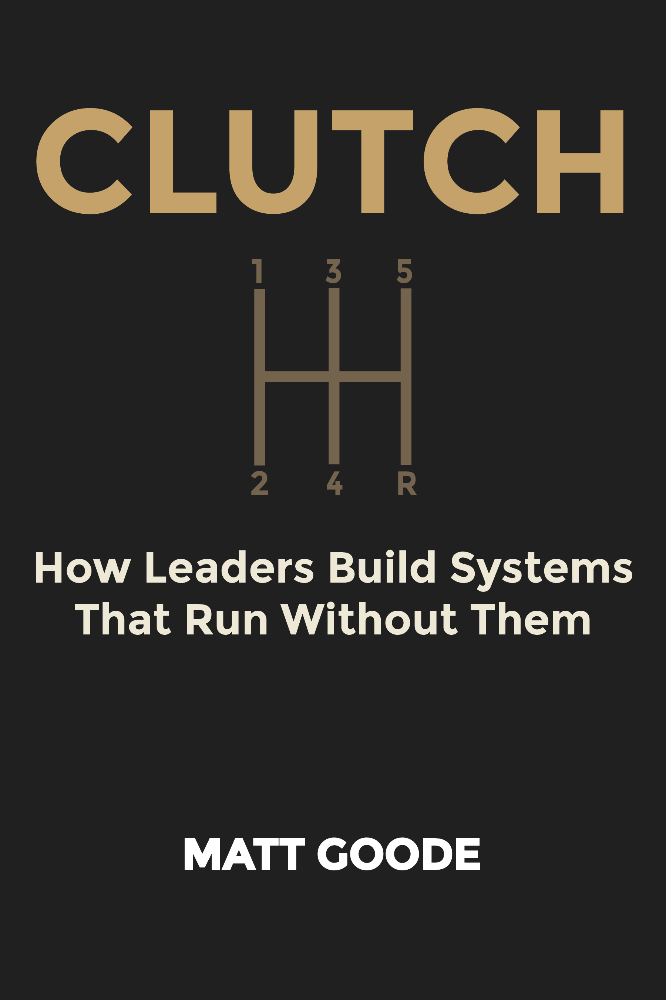

Leadership · Business Nonfiction
CLUTCH
How Leaders Build Systems That Run Without Them
"If your team can't move without you, that's not a sign you're indispensable. It's a sign you haven't finished the design."

About the Book
The operating manual
for getting out of the way.
"What if the bottleneck in your organization isn't a people problem — it's a design problem?"
Most leaders don't set out to become the bottleneck. It happens gradually. The team defers to you. You stay late to make sure things are done right. You loop yourself in on decisions that probably didn't need you. And one day you look up and realize: nothing moves without you.
CLUTCH is an operating manual for leaders who are ready to change that. Built around four integrated frameworks — CREATE, VOICES, the 6C Decision Compass, and DELEGATE — CLUTCH gives you the language, the tools, and the system to build an organization that thinks and acts with or without you in the room.
"Bottlenecks are not personality flaws. They are design failures. And design failures can be fixed."
— CLUTCH, IntroductionThe metaphor is a vehicle, because that's what a leadership system actually is: not a destination, but a machine that generates momentum. Matt Goode spent more than 20 years in classrooms and consulting rooms watching what happens when leaders get the design right — and what it costs when they don't.
CLUTCH is the book that comes from that. For founders, operators, coaches, and anyone who has ever thought: if I could just get out of my own team's way.
Comparable to: Patrick Lencioni, Kim Scott, Michael Bungay Stanier.
The Architecture
The Four Systems
CLUTCH is built on four integrated frameworks. Each one does a specific job. Together, they form a complete leadership operating system.
Culture, Relationships, Execution, Adaptability, Teaching, Ethics. The six cylinders that power everything else. If your engine is misfiring, no amount of gear-shifting fixes the problem.
Visionary, Operator, Independent, Coach, Encourager, Sculptor. Six leadership stances — not roles, not titles. The gearbox doesn't choose your destination. It determines whether you get there smoothly.
Command, Consultative, Collaborative, Consensus, Core Expert, Choice. Six modes for making decisions. The question isn't what to decide — it's how to decide who decides.
Define the Win, Establish the Way, List the Guardrails, Expect the Process, Give the Right Support, Agree on Checkpoints, Transfer Ownership, Encourage Growth. The GPS for ownership transfer.
Emotional Intelligence is the mechanism connecting all four systems. EQ is what enables smooth transitions between modes — the reason the title is CLUTCH. Without it, the engine revs and the wheels don't turn.
From the Book
Advanced Reader Copies
Read CLUTCH before anyone else.
CLUTCH is looking for its first readers. If you work with founders, lead teams, or coach leaders — and you want early access to the manuscript in exchange for an honest Amazon review when the book launches — reach out.
ARC readers get the full book, early. In return: one honest review on Amazon, posted within two weeks of launch day. That's it.
You're a good fit if you
- You're the bottleneck and you know it
- You lead a team, manage managers, or run an organization
- You work with founders, operators, or executive teams as a coach or consultant
- You can commit to an honest Amazon review within 2 weeks of launch
Follow the Work
Two ways to stay close
to what's being built.
![Substack]() The Leadership Lab
The Leadership LabThe Leadership Lab
Your organization is growing faster than your leadership can. CLUTCH is the system that closes that gap. Every Tuesday: the frameworks, diagnostics, and hard questions behind the book — applied to what's actually breaking. Free.
![LinkedIn]() LinkedIn
LinkedInMatt Goode
Where the professional work lives. If you're interested in leadership development, executive coaching, the GDC frameworks in practice — or you want to know when CLUTCH drops — LinkedIn is the place to follow. I publish a weekly newsletter.